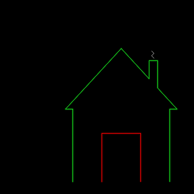
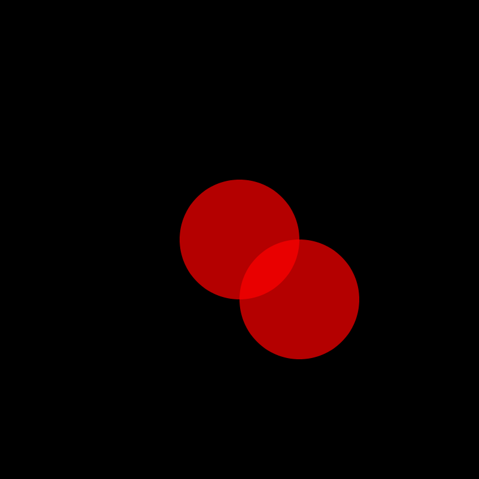
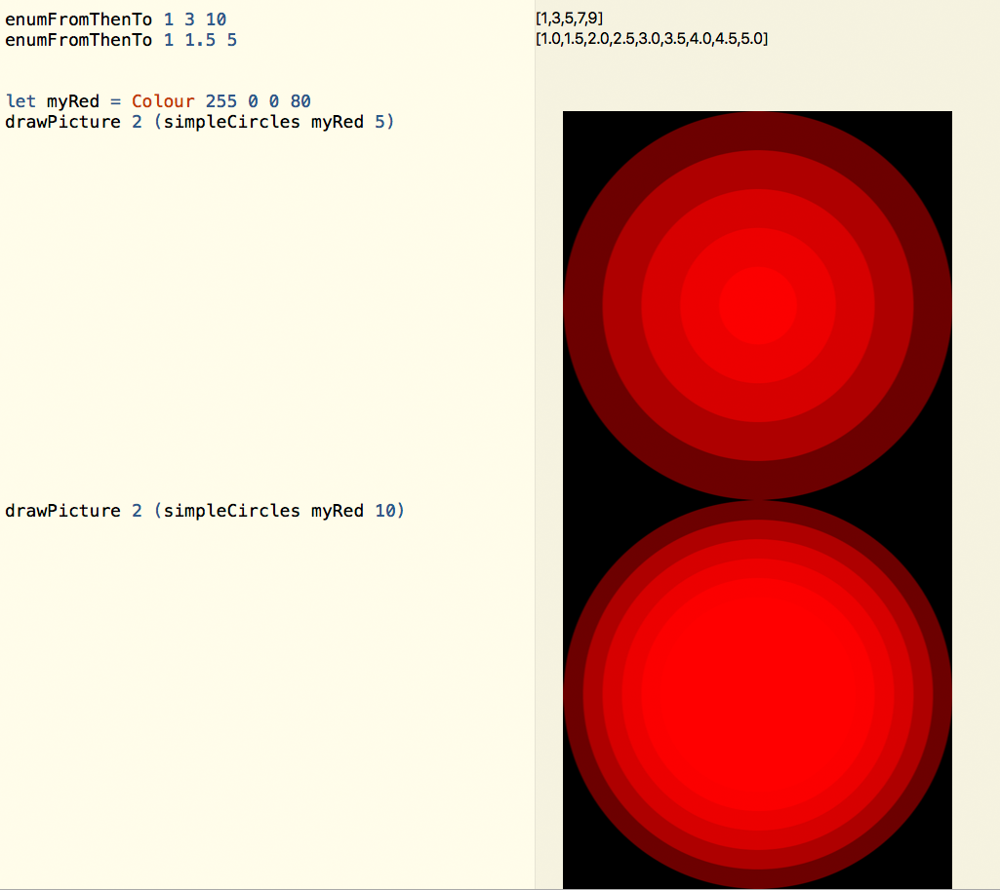

Exercise (Week 2)
Table of Contents
DUE: Tue June 18 14:00:00
1 Getting Started
Before you begin, make sure that you installed Haskell according to the Haskell Setup instructions. For this and next week's exercises, you might find it helpful to have a look at the first six chapters of Learning Haskell, as the graphics library used is similar.
To get started, please follow the instructions corresponding to your particular Haskell setup.
Download the exercise tarball and extract it to a directory in your
home directory at CSE. This tarball contains a file, called Ex01.hs,
wherein you will do all of your programming.
To test your code, run the following shell commands to open a GHCi session:
$ 3141
newclass starting new subshell for class COMP3141...
$ cabal repl
Resolving dependencies...
Configuring Ex01-1.0...
Preprocessing executable 'Ex01' for Ex01-1.0..
GHCi, version 8.2.2: http://www.haskell.org/ghc/ :? for help
[1 of 2] Compiling ShapeGraphics (ShapeGraphics.hs, interpreted)
[2 of 2] Compiling Ex01 (Ex01.hs, interpreted)
Ok, two modules loaded.
*ShapeGraphics> writeToFile housePic
Calling writeToFile as demonstrated above will write the provided
picture to a file called ex01.png in the directory in which you invoked
GHCi.
Note that you will only need to submit Ex01.hs, so only make changes
to that file.
Download the exercise tarball and extract it to a directory on
your local machine. This tarball contains a file, called Ex01.hs,
wherein you will do all of your programming.
To test your code, run the following shell commands to open a GHCi session:
$ stack repl
Configuring GHCi with the following packages: Ex01
Using main module: 1. Package 'Ex01' component exe:Ex01 ...
GHCi, version 8.2.2: http://www.haskell.org/ghc/ :? for help
[1 of 2] Compiling ShapeGraphics (ShapeGraphics.hs, interpreted)
[2 of 2] Compiling Ex01 (Ex01.hs, interpreted)
Ok, two modules loaded.
*Ex01 ShapeGraphics> writeToFile housePic
Calling writeToFile as demonstrated above will write the provided
picture (in this case housePic) to a file called ex01.png in the
directory in which you invoked GHCi.
Note that you will only need to submit Ex01.hs, so only make changes
to that file.
As a first step, look at the definition of the various data types in Ex01.hs.
You can safely ignore the definition of the function drawPicture. All you need
to know is that it takes as first parameter a floating point value which sets
the line width of the picture, and as second parameter a Picture, or a list of
PictureObject values, and returns a .png image of the resulting picture.
The function writeToFile further saves the resulting image to disk.
2 Part 1: Simple Picture (3 Marks)
Complete the definition of picture housePic in Ex01.hs such that it is a list of
two picture objects: house, a path defined by the co-ordinates in houseCOs,
coloured green, and with solid line style, and door, a path defined by the door
coordinates, coloured red, and with solid line style. Use drawPicture or
writeToFile (as demonstrated above) to check your definition.
As a next step,
define a new picture chimneyHouse, which has an a chimney and smoke, so
that it looks as follows:

The additional four coordinates needed for the chimney are the following:
(615, 325), (615, 250), (650, 250) and (650, 363).
For the smoke, use the four coordinates (635, 240), (625, 230), (635, 220), (625, 210)
and the colour grey already pre-defined in Ex01.hs.
Important: Make sure to use exactly the given coordinates; otherwise, automarking will not give you any marks.
3 Part 2: Moving Objects (3 Marks)
You are given a function which moves a point along a given vector and returns the new point. Use this function to complete the definition of the function:
movePictureObject :: Vector -> PictureObject -> PictureObject
which moves a picture object. You need to provide a rule for every possible picture object (the pattern matching for path is already part of the given definition).
The following GHCi Session:
GHCi, version 8.2.2: http://www.haskell.org/ghc/ :? for help [1 of 2] Compiling ShapeGraphics (ShapeGraphics.hs, interpreted) [2 of 2] Compiling Ex01 (Ex01.hs, interpreted) Ok, two modules loaded. *ShapeGraphics> let myRed = red { opacityC = 180 } *ShapeGraphics> let xy = (Point 400 400) *ShapeGraphics> let circ = Circle xy 100 myRed Solid SolidFill *ShapeGraphics> let v = (Vector 100 100) *ShapeGraphics> writeToFile [circ, movePictureObject v circ] *ShapeGraphics> :q
Ought to produce the following image in ex01.png:

Hint: Path and polygon are the more complicated cases - circle is pretty straight forward.
For both path and polygon, you may find the pre-defined function map :: (a -> b) -> [a] -> [b]
useful (as discussed in the lecture).
4 Part 3: Generating a Picture (3 Marks)
Write a function simpleCirclePic :: Colour -> Float -> Picture,
such that simpleCirclePic col n for a positive floating point number n generates the
picture consisting of overlapping circles:
[Circle (Point 400 400) (1 * (400/n)) col Solid SolidFill, Circle (Point 400 400) (2 * (400/n)) col Solid SolidFill, Circle (Point 400 400) (3 * (400/n)) col Solid SolidFill, .... Circle (Point 400 400) ((n-1) * (400/n)) col Solid SolidFill, Circle (Point 400 400) (n * (400/n)) col Solid SolidFill]
To test it, use a colour with low opacity value, for example Colour 153 0 153 100.
Hint: You can define this function using explicit recursion, but it is much easier to use the map function
we discussed in the lecture, and the function enumFromThenTo. The expression enumFromThenTo start next upperBound
generates the list [start, next, start + 2 * (next - start),..] up to upperBound.

5 Submission Instructions
Submit only the Haskell module file called Ex01.hs (not the entire project).
You can submit your exercise by typing:
$ give cs3141 Ex01 Ex01.hs
on a CSE terminal, or by using the give web interface. Your file must be named Ex01.hs (case-sensitive!).
A dry-run test will partially autotest your solution at submission time. To get full marks, you will need to perform further testing yourself.